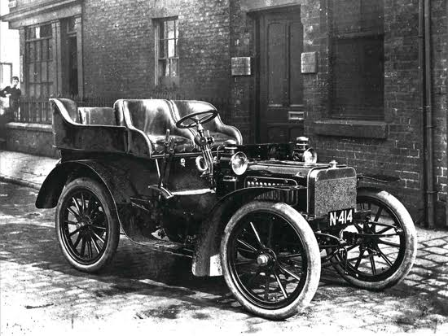
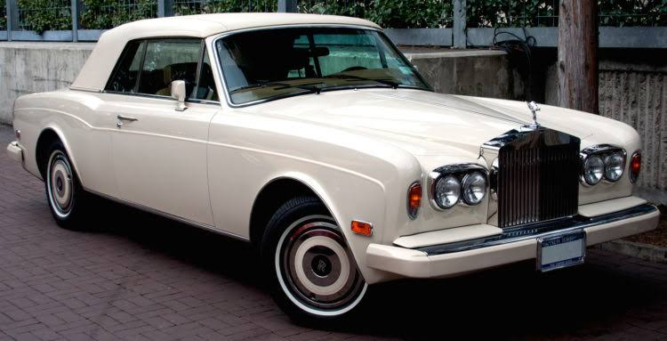
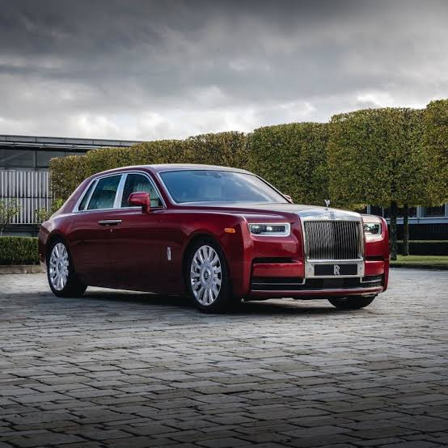

| Company name | Rolls-Royce Holdings PLC |
|---|---|
| Founder | Henry Royce & Charles Rolls |
| Founded on | 2011, Manchester, United Kingdom |
| Headquarters | London, United Kingdom |
| Parent organization | Bayerische Motoren Werke AG(BMW) |
| Chairman | Ian Davis |
| CEO | Warren East |
| No.of production plants | 1 |
| Customer service | emailenquiries@rolls‑roycemotorcars.com |
Rolls-Royce grew from the electrical and mechanical business established by Henry Royce in 1884. Royce built his first motor car in 1904 and in May of that year met Charles Rolls, whose company sold quality cars in London.An agreement was reached that Royce Limited would manufacture a range of cars to be exclusively sold by CS Rolls & Co – they were to bear the name Rolls-Royce.
Success with the cars led to the formation of the Rolls-Royce company in March 1906 and to the launch of the six-cylinder Silver Ghost which, within a year, was hailed as 'the best car in the world'.At the start of the First World War, in response to the nation's needs, Royce designed his first aero engine – the Eagle, providing some half of the total horsepower used in the air war by the allies.The Eagle powered the first direct transatlantic flight as well as the first flight from England to Australia – both in the Vickers Vimy aircraft.
BMW took over responsibility for Rolls-Royce cars from the beginning of 2003.Rolls Royce took full control of our oil and gas joint venture, Cooper Rolls, with the acquisition of the rotating compression equipment interests of Cooper Energy Services.They also acquired National Airmotive in California, a major repair and overhaul facility now part of Rolls-Royce Engine Services.
